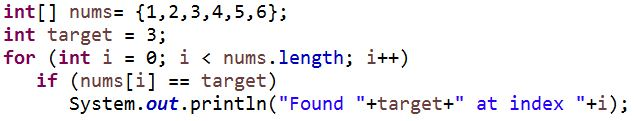
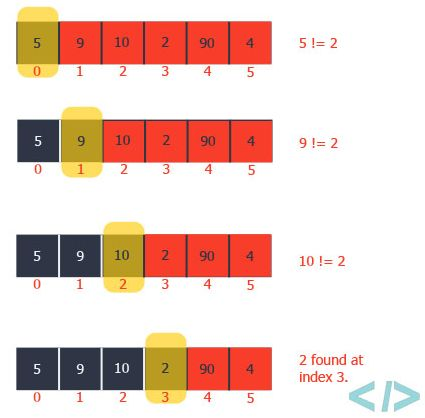
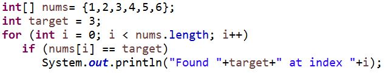

Sorting and Searching in Java
This lesson will teach you about Searching and Sorting.
You will learn about simple Searching and Sorting Algorithms, as well as how to use them in Java.
You will be given code examples for each, as well as a project that demonstrates the algorithm.
Searching Sorting Project
There are many different types of searching algorithms, some faster than others. Speed is measured using
time complexity, typically represented as O times a given value.
The smaller the time complexity, the faster the algorithm is (on average).
The letter n in time complexity represents the number of elements in the array.
For instance, an algorithm with time complexity O(n) would be faster than that of O(n^2).
O(log(n)) would be faster than O(n).
The time complexity for algorithms represents the average speed the algorithm may take.
Some algorithms may be faster than others in some circumstances, depending on the location of the value searching for, and the length of the array.
A simple searching algorithm with time complexity O(n) is sequential or liner search.
It simply scans the array sequentially, from the 1st to last value, to see if it is the right value

Binary Search is a more efficient searching algorithm when it comes to larger arrays.
It selects the middle index in the array, and compares it to the value it is searching for.
If the middle is larger than the search value, it will choose the middle of the sub-array consisting of
index 0 to middle index-1 and repeat until the value is found.
Otherwise it will choose the middle of the sub-array middle index+1 to last index and repeats
Click here to read more about Searching Algorithms.
Sorting
Time complexity also applies to sorting algorithms, as they need to make many comparisons and
movements of elements to successfully sort the array
One of the more simple sorting algorithms, selection sort, scans through the array sequentially from
start to end to find the minimum of a given sub-array and moves it to the beginning.
It then repeats with a smaller sub-array, discluding the values already in place.

Click here to read more about Sorting Algorithms.
This lesson will teach you about Searching and Sorting.
You will learn about simple Searching and Sorting Algorithms, as well as how to use them in Java.
You will be given code examples for each, as well as a project that demonstrates the algorithm.
Searching Sorting Project
This is a combined demonstration of Searching/Sorting in Java.
and Insertion Sort by only targetting a sorted sub-array and increasing the range every time.


There are many different types of searching algorithms, some faster than others. Speed is measured using
time complexity, typically represented as O times a given value.
The smaller the time complexity, the faster the algorithm is (on average).
The letter n in time complexity represents the number of elements in the array.
For instance, an algorithm with time complexity O(n) would be faster than that of O(n^2).
O(log(n)) would be faster than O(n).
The time complexity for algorithms represents the average speed the algorithm may take.
Some algorithms may be faster than others in some circumstances, depending on the location of the value searching for, and the length of the array.
A simple searching algorithm with time complexity O(n) is sequential or liner search.
It simply scans the array sequentially, from the 1st to last value, to see if it is the right value

Found 3 at index 2

Binary Search is a more efficient searching algorithm when it comes to larger arrays.
It selects the middle index in the array, and compares it to the value it is searching for.
If the middle is larger than the search value, it will choose the middle of the sub-array consisting of
index 0 to middle index-1 and repeat until the value is found.
Otherwise it will choose the middle of the sub-array middle index+1 to last index and repeats
Click here to read more about Searching Algorithms.
Sorting

Time complexity also applies to sorting algorithms, as they need to make many comparisons and
movements of elements to successfully sort the array
One of the more simple sorting algorithms, selection sort, scans through the array sequentially from
start to end to find the minimum of a given sub-array and moves it to the beginning.
It then repeats with a smaller sub-array, discluding the values already in place.
Output: 1 3 4 5 7 9 Click here to read more about Sorting Algorithms.